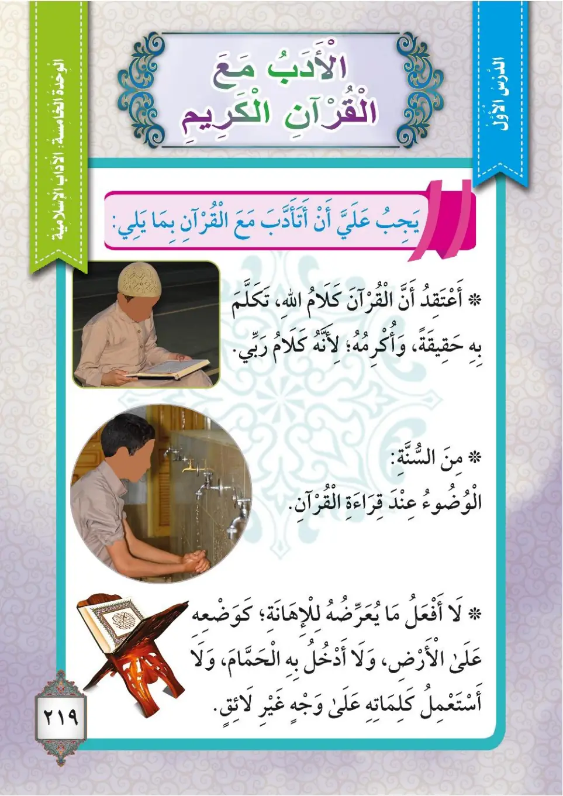
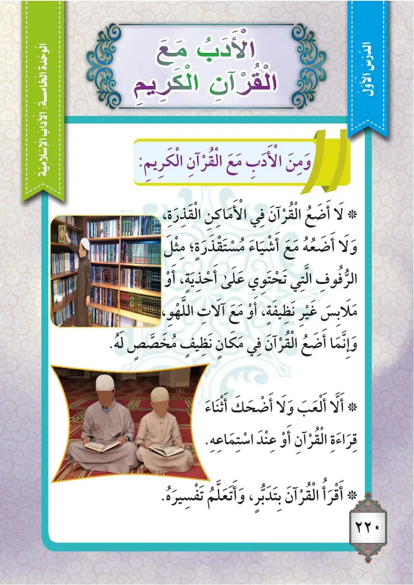
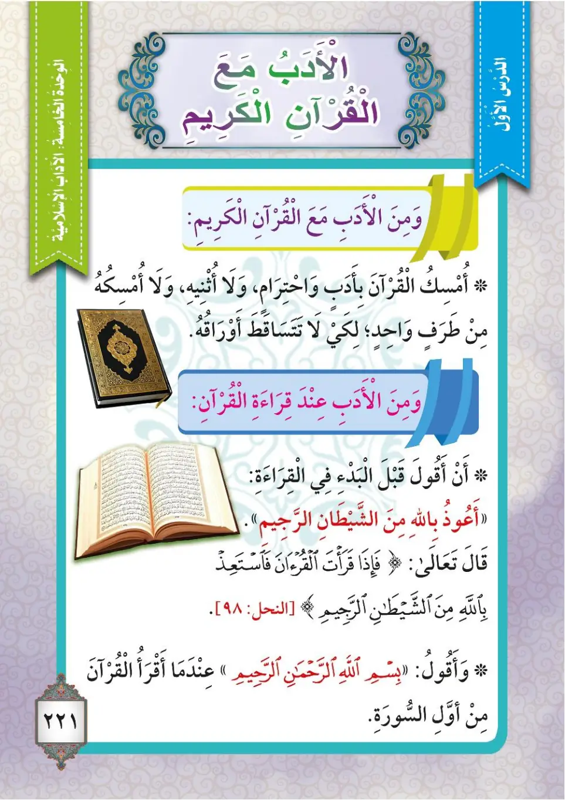

Stage 3·المرحلة الثالثة⭐ Unit 1
آدَابُ مَعَ القُرْآنِ الكَرِيمِ Manners with the Noble Quran
From the Textbookpp. 220–222



يجبُ على كلِّ مسلمٍ أنْ يأدبَ مع القرآنِ الكريمِ بما يلي: ١- أنْ أعتقدَ أنَّ القرآنَ الكريمَ كلامُ اللهِ تعالى حقيقةً، لأنه أكرمُ كلامٍ وأكرمُ مُرَبٍّ. ٢- ومن السُّنَّةِ: الوضوءُ عند قراءةِ القرآنِ الكريمِ. ٣- أنْ لا أفعلَ ما يُعرِّضُهُ للإهانةِ، كوضعِهِ على الأرضِ، ولا أدخلَ به الحمّامَ، ولا أستعملَ كلماتِهِ في غيرِ ما هو لائقٌ.
Yajibu 'ala kulli muslimin an yadhiba ma'a al-Qur'ani al-karimi bima yali: 1- an a'taqida anna al-Qur'ana al-karima kalamu Allahi ta'ala haqiqatan, li'annahu akramu kalamin wa akramu murabbin. 2- wa mina as-sunnati: al-wudu'u 'inda qira'ati al-Qur'ani al-karimi. 3- an la af'ala ma yu'arriduhu lil-ihanati, kawad'iHi 'ala al-ardi, wa la adkhula bi-hi al-hammama, wa la asta'mila kalimatihi fi ghayri ma huwa la'iqun.
Every Muslim must observe good manners with the noble Quran:
1. I believe that the noble Quran is truly the speech of Allah the Exalted, for it is the noblest speech and the noblest teacher.
2. From the Sunnah: to perform ablution (wudu) before reciting the noble Quran.
3. I do not do anything that exposes it to disrespect, such as placing it on the ground, or entering the bathroom with it, or using its words inappropriately.
ஒவ்வொரு முஸ்லிமும் குர்ஆனுடன் நல்ல நடத்தையைக் கடைப்பிடிக்க வேண்டும்:
1. திருக்குர்ஆன் அல்லாஹ்வின் உண்மையான வார்த்தைகள் என்று நான் நம்புகிறேன்; ஏனெனில் அது மேலான பேச்சும் மேலான ஆசிரியரும் ஆகும்.
2. சுன்னாவில் உள்ளது: திருக்குர்ஆனை ஓதும்போது அங்கத் தூய்மை (உளூ) செய்வது.
3. அதை நிலத்தில் வைப்பது, அதனுடன் குளியலறைக்குச் செல்வது, அல்லது அதன் வார்த்தைகளைத் தகாத வழியில் பயன்படுத்துவது போன்ற அவமரியாதையான செயல்களை நான் செய்யமாட்டேன்.
ومن الأدبِ مع القرآنِ الكريمِ: ١- لا أضعُ القرآنَ في الأماكنِ القذرةِ، ولا أَضَعُهُ على رفوفٍ تحتوي على أحذيةٍ، أو آلاتِ لَهوٍ، أو ملابسَ غيرَ نظيفةٍ، وإنما أضعُهُ في مكانٍ نظيفٍ مخصصٍ له. ٢- لا ألعبُ ولا أضحكُ أثناءَ قراءةِ القرآنِ أو عند استماعِهِ. ٣- أقرأُ القرآنَ بتدبُّرٍ، وأتعلَّمُ تفسيرَهُ.
Wa mina al-adabi ma'a al-Qur'ani al-karimi: 1- la adha'u al-Qur'ana fi al-amakini al-qadhirah, wa la adha'uHu 'ala rufufin tahtawi 'ala ahdhiyah, aw alati lahw, aw malabisa ghayra nazifah, wa innama adha'uHu fi makanin nazifin mukhassasin laHu. 2- la al'abu wa la adhaku athna'a qira'ati al-Qur'ani aw 'inda istima'iHi. 3- aqra'u al-Qur'ana bi-tadabburin, wa ata'allamu tafsiraHu.
More manners with the noble Quran:
1. I do not place the Quran in dirty places, nor do I place it on shelves that contain shoes, toys, or unclean clothes. Rather, I place it in a clean place set aside for it.
2. I do not play or laugh while reciting the Quran or while listening to it.
3. I recite the Quran with reflection (tadabbur), and I learn its explanation (tafsir).
திருக்குர்ஆனுடன் கூடுதல் நடத்தைகள்:
1. அழுக்கான இடங்களில் குர்ஆனை வைக்கமாட்டேன்; காலணிகள், பொம்மைகள் அல்லது தூய்மையற்ற ஆடைகள் வைக்கப்பட்டுள்ள அலமாரிகளிலும் அதை வைக்கமாட்டேன். அதற்கென ஒதுக்கப்பட்ட தூய்மையான இடத்தில் மட்டும் அதை வைப்பேன்.
2. குர்ஆனை ஓதும்போது அல்லது கேட்கும்போது நான் விளையாடவோ சிரிக்கவோ மாட்டேன்.
3. சிந்தனையுடன் குர்ஆனை ஓதுவேன்; அதன் விளக்கத்தை (தஃப்சீர்) கற்றுக்கொள்வேன்.
ومن الأدبِ مع القرآنِ الكريمِ: أمسكُ القرآنَ بأدبٍ واحترامٍ، ولا أثنيهِ، ولا أمسكُهُ من طرفٍ واحدٍ لكيلا تتساقطَ أوراقُهُ. ومن أدبِ القراءةِ: في البدءِ قبلَ القراءةِ أقولُ: «أعوذُ باللهِ مِنَ الشَّيْطَانِ الرَّجِيمِ». قالَ تعالى:
Wa mina al-adabi ma'a al-Qur'ani al-karimi: amsiku al-Qur'ana bi-adabin wa ihtiramin, wa la athniHi, wa la amsikuHu min tarafin wahidin li-kayla tataasaqata awraquHu. Wa min adabi al-qira'ati: fi al-bad'i qabla al-qira'ati aqulu: «A'udhu billahi mina ash-shaytani ar-rajim». Qala ta'ala:
And from the manners with the noble Quran: I hold the Quran with politeness and respect, I do not fold it, and I do not hold it from one corner so that its pages do not fall out.
From the manners of recitation: before starting to recite, I say: "A'udhu billahi min ash-shaytani ar-rajim." Allah the Exalted said:
திருக்குர்ஆனுடன் நடத்தைகள்: குர்ஆனை மரியாதையுடனும் பணிவுடனும் பிடிப்பேன்; அதை மடக்கமாட்டேன்; பக்கங்கள் உதிர்ந்துவிடாமல் இருக்க ஒரு மூலையில் மட்டும் பிடிக்கமாட்டேன்.
ஓதுவதற்கான நடத்தைகள்: ஓதத் தொடங்குவதற்கு முன் நான் கூறுவேன்: "அஊது பில்லாஹி மினஷ்-ஷைத்தானிர்-ரஜீம்" (விரட்டப்பட்ட ஷைத்தானிடமிருந்து அல்லாஹ்விடம் பாதுகாப்புத் தேடுகிறேன்). அல்லாஹ் கூறினான்:
﴿فَإِذَا قَرَأْتَ الْقُرْآنَ فَاسْتَعِذْ بِاللَّهِ مِنَ الشَّيْطَانِ الرَّجِيمِ﴾
Fa-idha qara'ta al-Qur'ana fasta'idh billahi mina ash-shaytani ar-rajim.
So when you recite the Quran, seek refuge with Allah from Satan, the outcast.
நீங்கள் குர்ஆனை ஓதும்போது, விரட்டப்பட்ட ஷைத்தானிடமிருந்து அல்லாஹ்விடம் பாதுகாப்புத் தேடுங்கள்.
وعندما أقرأُ القرآنَ أقولُ: «بسمِ اللهِ الرَّحْمَنِ الرَّحِيمِ» من أولِ السورَةِ.
Wa 'indama aqra'u al-Qur'ana aqulu: «Bismillahi ar-Rahmani ar-Rahim» min awwali as-surah.
And when I recite the Quran, I say: "Bismillahi ar-Rahmani ar-Rahim" at the beginning of the surah.
குர்ஆனை ஓதும்போது, அத்தியாயத்தின் தொடக்கத்தில் "பிஸ்மில்லாஹிர்-ரஹ்மானிர்-ரஹீம்" (அளவற்ற அருளாளனும், நிகரற்ற அன்புடையோனுமான அல்லாஹ்வின் பெயரால்) என்கிறேன்.